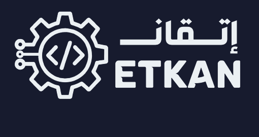

تتقدم إتقان بهذا العرض إلى شركة نقطة بهدف بناء تعاون نوعي لإطلاق وتقديم المسار صناعي ضمن بيئة تعليمية ومخبرية متخصصة، تجمع بين المعرفة النظرية والتطبيق العملي، وتهدف إلى إعداد طلاب قادرين على فهم الأنظمة التقنية والهندسية بصورة متكاملة، وليس فقط دراسة كل مجال بمعزل عن الآخر. وبالتالي قادرين على الانتاج الحقيقي.
ينطلق هذا المسار من رؤية مختلفة للتعليم التقني والهندسي؛ فالعالم الصناعي الحديث لا يعمل ضمن تخصصات منفصلة، بل ضمن أنظمة مترابطة تجمع بين الإلكترونيات والميكانيك والبرمجيات والتحكم والتكامل بينها. ومن هنا تأتي أهمية بناء الطالب على فهم هذه المجالات وعلاقتها ببعضها، ثم الانتقال به تدريجيًا من الفهم الأساسي إلى التطبيق والإنتاج والتخصص.
ويستمر المسار في مرحلته الأساسية لمدة سنتين ونصف، ينتقل بعدها الطالب إلى مرحلة التخصص ضمن المسار، وفق المنهج والتدرج العلمي المعتمد من إتقان.
لا تكمن قيمة المسار في تقديم مواد منفردة في الإلكترونيات أو الميكانيك أو البرمجة، إذ إن كل مجال منها يمكن أن يُدرّس بصورة مستقلة، وإنما تكمن القيمة الأساسية في اختيار هذه المجالات وربطها وتكاملها ضمن منظومة تعليمية واحدة ومتدرجة.
وقد تم تطوير هذا التصور بناءً على خبرة إتقان والعلمية والصناعية والتعليمية بالاضافة، بحيث لا يتعامل الطالب مع المعرفة على شكل مواد منفصلة، بل يفهم كيف تعمل هذه المجالات معًا في الأنظمة والمشاريع الحقيقية.
ويتميز المسار بصورة خاصة بـ:
وتعتبر المناهج، وتسلسلها، وترابط محتوياتها، وطريقة تقديمها، والخبرة التعليمية المتراكمة خلفها من أهم عناصر القيمة التي تقدمها إتقان في هذا التعاون، وهي منظومة تعليمية متخصصة ومميزة ونادرة من حيث طبيعة تكاملها، ولا تتوافر عادةً بهذا الشكل ضمن البرامج التعليمية التقليدية.
يقوم التعاون المقترح على تكامل واضح بين قدرات الطرفين، بحيث تتولى كل جهة الجانب الذي تتميز فيه.
تقدم إتقان للمشروع:
تقدم نقطة للمشروع:
يتم تنفيذ المسار ضمن المختبر الذي تؤمنه نقطة، مع الاستفادة من تجهيزاته في العملية التعليمية.
تحدد إتقان الاحتياجات العلمية والتعليمية للمختبر والتجهيزات اللازمة للمراحل المختلفة، بينما تتولى نقطة تأمينها بما يضمن أن يكون المختبر متوافقًا مع متطلبات المنهج. (ملاحظة إن متطلبات مسار اتقان منسجمة تمام مع متطلبات المختبر المتخصص في بناء ال prototype)
ويتم تحديد جدول الحصص بالتنسيق بين الطرفين، بما يراعي توفر الأساتذة والمكان واحتياجات الطلاب.
ولا يوجد حد أدنى محدد لعدد الطلاب لبدء المسار أو استمرار الحصص، وتبقى آلية التشغيل مرتبطة بالتنسيق بين الطرفين.
تتقاضى إتقان مقابل تقديمها للمسار والخبرة العلمية والتعليمية وتأمين الأساتذة والإشراف العلمي:
ويتم احتساب المستحقات شهريًا بناءً على عدد الحصص التي تم تنفيذها فعليًا، ويكون الدفع من نقطة إلى إتقان بصورة شهرية.
ولا تستحق إتقان بدلًا عن الحصة التي لم تنعقد فعليًا.
ولا ترتبط أتعاب إتقان بعدد الطلاب المسجلين أو بقيمة الرسوم التي تتقاضاها نقطة من الطلاب، كما لا يوجد بين الطرفين في هذا النموذج تقاسم الأرباح أو الإيرادات.
ويجوز للطرفين مراجعة قيمة الحصة و تعديلها مستقبلًا بموجب اتفاق بينهما.
ويمنح التعاون نقطة حق استخدام المسار وتنفيذه ضمن نطاق المشروع المتفق عليه طوال فترة التعاون.
ولا يترتب على هذا التعاون انتقال ملكية المسار أو محتواه أو منهجيته إلى نقطة.
كما أن طبيعة التعاون غير حصرية، ويحق لإتقان تقديم المسار أو تطويره أو التعاون بشأنه مع جهات أخرى.
وفي المقابل، تبقى ملكية المكان والمختبر والأجهزة والتجهيزات التي تؤمنها أو تشتريها نقطة ملكًا كاملًا لها.
يتم التعريف بالمسار والترويج له بالتعاون بين الطرفين، ويجوز استخدام اسم وشعار كل من إتقان ونقطة في المواد التعريفية والتسويقية الخاصة بالمشروع وفق ما يتم التنسيق عليه بين الطرفين.
كما يتم إصدار شهادات المسار باسم إتقان ونقطة معًا.
أما نظام العلامات والتقييم التفصيلي، وشروط الانتقال بين المراحل، ومتطلبات التخرج، وشكل ومحتوى الشهادات، فيتم تحديدها لاحقًا بالتنسيق بين الطرفين وبما يتوافق مع المنهج العلمي المعتمد من إتقان.
يقترح أن يكون التعاون مفتوح المدة، بما يسمح ببناء المسار وتطويره واستمراره بصورة طويلة الأمد.
ويحق لأي من الطرفين إنهاء التعاون من خلال إشعار الطرف الآخر خطيًا قبل 30 يومًا.
وفي حال إنهاء التعاون، يتم التنسيق بين الطرفين بما يضمن التعامل المسؤول مع الطلاب الذين بدأوا مسارهم، وتأمين الترتيبات اللازمة لاستكمال تعليمهم وفق ما يتم الاتفاق عليه بين الطرفين.
هذا العرض قائم على تعاون بين جهتين مستقلتين:
ولا يهدف هذا التعاون إلى إنشاء شركة جديدة أو علاقة وكالة أو تبعية بين الطرفين، بل إلى تكامل الخبرات والإمكانات لدى كل منهما لإنشاء وتشغيل مسار تعليمي نوعي.
ترى إتقان أن القيمة الحقيقية لهذا التعاون لا تكمن فقط في إطلاق برنامج تعليمي جديد، وإنما في إنشاء بيئة تعليمية تطبيقية قادرة على بناء جيل يمتلك فهمًا هندسيًا وتقنيًا متكاملًا.
فوجود المنهج والخبرة والكادر العلمي دون بيئة تطبيقية وتجهيزات مناسبة لا يحقق كامل الإمكانات التعليمية للمسار، كما أن وجود المختبر والتجهيزات دون منهج متكامل وإدارة علمية متخصصة لا يحقق القيمة المرجوة منها.
ومن هنا يأتي التكامل المقترح:
وباجتماع هذه العناصر، يمكن تقديم تجربة تعليمية تتجاوز النموذج التقليدي القائم على دراسة المواد بصورة منفصلة، نحو تجربة تبني لدى الطالب القدرة على الفهم، والتطبيق، والربط، والتصميم، وحل المشكلات، ثم التخصص ضمن مجال واضح بعد امتلاك قاعدة هندسية وتقنية واسعة.
وعليه، تتقدم إتقان بهذا العرض إلى شركة نقطة كأساس للتعاون، على أن يتم بعد الموافقة المبدئية مناقشة التفاصيل التنفيذية والإدارية اللازمة والاتفاق عليها بصورة رسمية بين الطرفين.